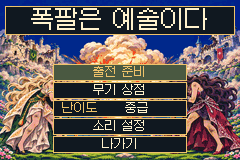
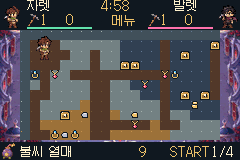
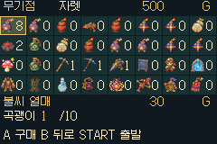
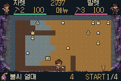
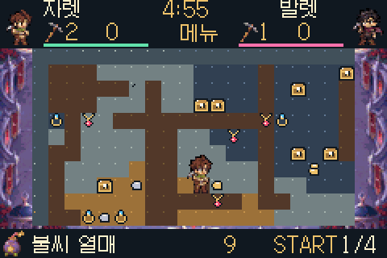

✦ 01
직접 파서 찾는 보물
흙과 단단한 바위를 곡괭이로 깨고 광물과 상자를 찾아 골드를 모읍니다.
한 칸씩 땅을 파고, 반짝이는 보물을 찾고, 폭탄을 놓을 순간을 기다리는 던전 대전.
Game Boy Advance용 홈브루 게임 · 키보드로도 플레이 가능

240×160 화면을 네 구역으로 나눠 살펴봅니다. 화면 밖에서 날아오는 공격에 놀랄 일 없이, 두 플레이어가 같은 광산을 보고 싸웁니다.



귀여운 도트 광산 아래에는 보물과 함정, 그리고 한 번의 역전이 숨어 있습니다.
흙과 단단한 바위를 곡괭이로 깨고 광물과 상자를 찾아 골드를 모읍니다.
작은 폭탄, 십자 폭탄, 다이너마이트와 핵폭탄. 범위와 심지를 읽고 피하세요.
원격 폭탄, 지뢰, 불붙은 통과 우레탄폼으로 통로를 나만의 함정으로 만듭니다.
빛의 자렛과 어둠의 발렛. 파기·걷기·아이템 사용 동작을 도트로 표현했습니다.
맵과 보물의 자리가 달라져 매 라운드마다 새로운 길을 찾습니다.
거지, 평민, 귀족, 왕, 드래곤. 직업에 따라 채굴 방식과 능력이 달라집니다.

넓은 지형, 작은 캐릭터, 반짝이는 보물. GBA 화면에 맞춰 광산을 네 구역으로 나누어 탐험합니다.
역할마다 고유한 채굴 방식과 개성을 갖습니다.
키보드로 게임을 할 때 기본 이동과 무기 조작은 아래처럼 대응합니다. 실제 GBA에서는 십자키와 A·B·L·R 버튼을 사용합니다.
캐릭터 동작 보기 ↗A: 선택 아이템 사용 · B: 방망이 / 폭파 동작
L·R: 아이템 변경 · START: 메뉴와 일시정지
GBA판 r14를 내려받아 광산으로 출발하세요.